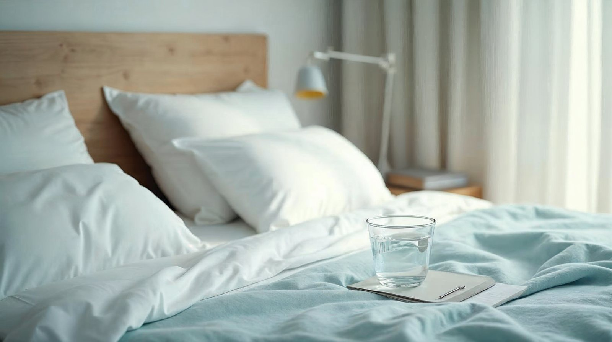
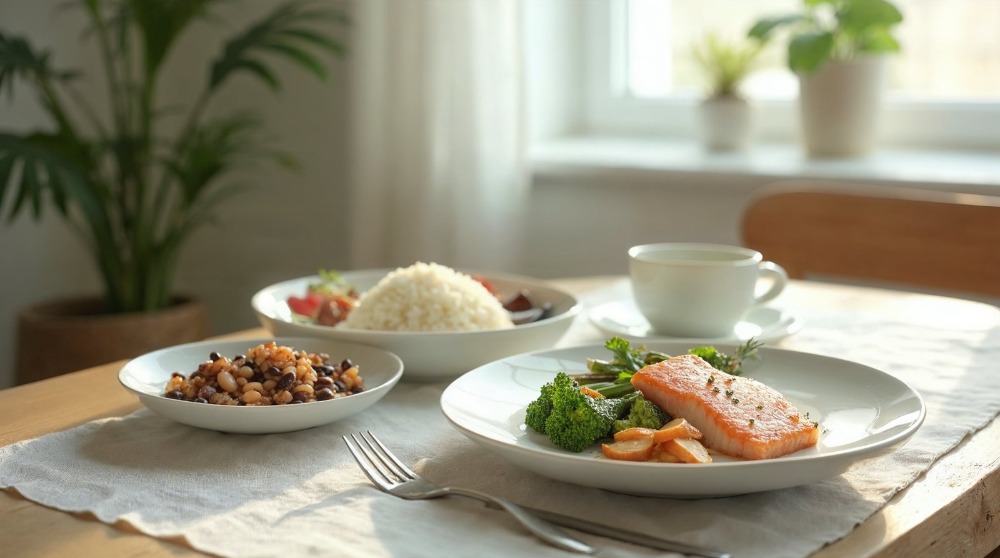
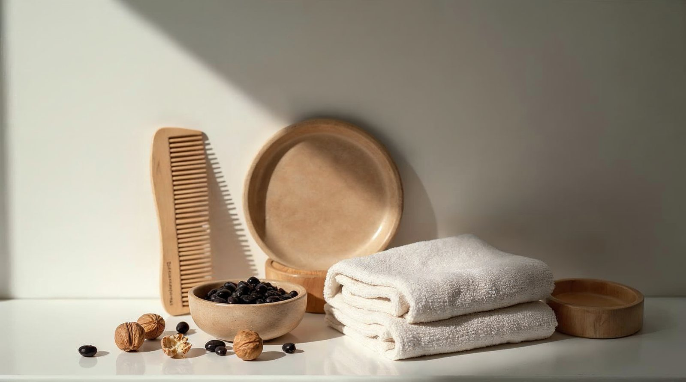
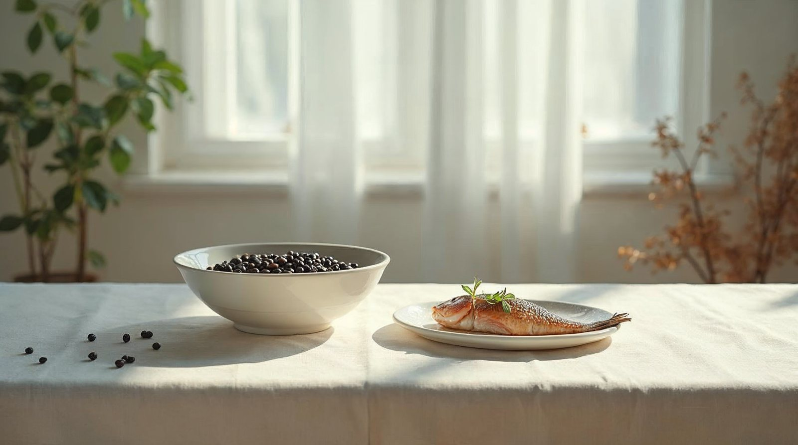

이종호 한의사 감수좋은꿈참사랑한의원 대표원장 (한의사 면허번호 19769)발행 2026-11-26 · 수정 2026-11-26
이 글의 차례
엘리베이터 거울 위 조명 아래서 정수리가 유난히 훤해 보입니다. 머리를 감고 나면 배수구에 모인 머리카락이 예전보다 많은 것 같고, 사진 속 이마 선이 몇 년 전보다 올라가 있습니다. 모자를 쓰는 날이 늘고, 미용실 의자에 앉으면 괜히 고개를 숙이게 됩니다.
진료실에서는 아직 젊은데 벌써 이러니 속상하다는 말씀, 가르마 쪽이 비어 보여 머리 묶기가 싫어졌다는 말씀을 조심스럽게 꺼내시는 분이 많습니다. 머리카락은 외모를 넘어 자신감과 이어져 있어, 그 걱정이 얼마나 큰지 저도 잘 압니다.
이마 선이 M자 모양으로 올라가거나 정수리가 비어 가는 모습을 남성형 탈모, 정수리와 가르마를 따라 머리숱이 전체적으로 가늘어지는 모습을 여성형 탈모라고 부릅니다. 이름은 다르지만 둘 다 머리카락이 한꺼번에 빠지기보다 조금씩 가늘고 짧아지면서 천천히 진행한다는 공통점이 있습니다.
탈모는 한 가지 원인으로 생기지 않습니다. 유전과 호르몬이 바탕에 있고, 두피 환경, 잠, 식사, 스트레스, 다른 병과 약이 그 위에 얹힙니다. 이 글에서는 탈모의 모양을 나눠 보고, 생활에서 해 볼 수 있는 것과 함께 살필 수 있는 것을 정리해 보려 합니다.
왜 머리카락이 점점 가늘어지고 빠질까요
머리카락 한 올은 자라는 시기, 멈추는 시기, 빠지는 시기를 되풀이합니다. 자라는 시기는 몇 년에 이르고, 그 뒤 몇 달 쉬었다가 빠지고 그 자리에서 새 머리카락이 다시 자랍니다. 그래서 하루에 수십 올 정도 빠지는 것은 자연스러운 일입니다.
남성형·여성형 탈모에서는 이 주기가 조금씩 짧아집니다. 자라는 시기가 짧아지니 머리카락이 충분히 굵고 길게 자라기 전에 빠지고, 새로 나는 머리카락은 점점 가늘고 짧아집니다. 머리카락 수가 갑자기 줄기보다 굵기가 가늘어져 숱이 적어 보이는 것이 특징입니다.
이 변화에는 남성호르몬의 한 종류가 모낭에 작용하는 것이 큰 역할을 합니다. 같은 호르몬이라도 모낭이 얼마나 예민하게 반응하는지는 유전에 따라 다르기 때문에, 가족 중에 탈모가 있는 분에게서 더 흔하게 나타납니다.
여성의 경우 출산, 갱년기처럼 호르몬이 크게 바뀌는 시기에 숱이 줄어드는 것을 느끼는 분이 많습니다. 철분이 부족하거나 갑상선 기능에 변화가 있을 때도 머리카락이 가늘어질 수 있어 검사를 함께 권하기도 합니다.
한의학에서는 머리카락을 혈(血)의 나머지, 곧 '발위혈지여(髮爲血之餘)'라 하여 혈이 넉넉해야 머리카락이 윤기 있게 자란다고 보았습니다. 또 신(腎)의 기운이 머리카락에 드러난다고 보아, 나이와 체력, 잠과 피로를 함께 살펴 왔습니다. 두피에 열과 기름이 많은 쪽과 몸이 지치고 메마른 쪽을 나눠 보는 것도 이 때문입니다.
남성형·여성형 탈모와 다른 탈모는 어떻게 다를까요
남성형 탈모는 이마 양옆이 M자로 올라가거나 정수리가 둥글게 비어 가는 모습이 흔합니다. 뒤통수와 옆머리는 비교적 오래 유지되는 경우가 많습니다.
여성형 탈모는 이마 선은 비교적 그대로 있으면서 정수리와 가르마를 따라 숱이 넓게 줄어드는 모습이 흔합니다. 가르마가 크리스마스트리 모양으로 넓어진다고 표현하기도 합니다.
원형 탈모는 모양이 다릅니다. 동전 모양으로 한 군데 또는 여러 군데가 매끈하게 비고, 비교적 짧은 사이에 생깁니다. 면역 반응과 관련된 것으로 알려져 있어 살피는 방향이 다르고, 피부과 진료를 먼저 받아 보시길 권합니다.
큰 스트레스, 고열, 출산, 수술, 급한 다이어트 뒤 두세 달쯤 지나 머리카락이 한꺼번에 많이 빠지는 휴지기 탈모도 있습니다. 머리 전체에서 고르게 빠지고, 원인이 지나가면 몇 달에 걸쳐 다시 자라는 흐름을 보이는 경우가 많습니다.
두피에 붉음과 각질, 가려움이 심하다면 지루성 피부염이나 건선 같은 두피 질환이 함께 있을 수 있습니다. 두피의 염증이 오래가면 머리카락에도 영향을 주기 때문에 그 쪽을 먼저 살핍니다.
예를 들면 이런 모습입니다
실제 어느 분의 사연이 아니라, 진료실에서 자주 보는 모습을 바탕으로 그려 본 장면입니다.
예를 들어 야근이 잦은 직장인이라면, 몇 년 사이 이마 선이 조금씩 올라가고 오후만 되면 두피가 번들거린다고 하십니다. 이럴 때는 피부과 치료 여부를 먼저 확인하고, 잠드는 시각과 늦은 야식, 머리 감는 시각을 함께 정리합니다.
출산 뒤 몇 달이 지난 분이라면, 머리카락이 한 움큼씩 빠져 놀라 오시기도 합니다. 출산 뒤 휴지기 탈모는 흔한 과정이라는 것을 먼저 말씀드리고, 수유와 잠, 식사로 지친 몸을 함께 살핍니다. 1년 가까이 지나도 숱이 돌아오지 않는다면 여성형 탈모가 겹쳐 있는지도 확인합니다.
다이어트를 오래 이어 온 분이라면, 체중은 줄었는데 머리카락이 가늘어지고 손톱이 잘 부러진다고 하십니다. 단백질과 철분이 부족하지 않은지 식사를 함께 살펴보고, 필요하면 혈액 검사를 권합니다.
스스로 살펴보는 질문
아래 질문으로 탈모의 모양을 정리해 보세요. 진단을 내리는 표가 아니라, 진료실에서 상태를 말로 옮기기 위한 정리표입니다.
- 비어 보이는 자리는 이마 양옆, 정수리, 가르마, 전체 가운데 어디인가
- 한꺼번에 많이 빠지는가, 점점 가늘어지며 숱이 줄어드는가
- 언제부터 느꼈고, 그 무렵 큰 일(출산, 수술, 고열, 다이어트, 스트레스)이 있었는가
- 가족 가운데 비슷한 탈모가 있는가
- 두피에 기름, 각질, 가려움, 붉음이 있는가
- 피로, 추위 탐, 월경 변화, 손톱 변화 같은 다른 신호가 있는가
같은 자리, 같은 조명에서 한 달에 한 번쯤 사진을 찍어 두시면 변화를 보는 데 큰 도움이 됩니다. 매일 거울을 보면 오히려 변화가 잘 보이지 않고 걱정만 커지기 쉽습니다.

탈모를 재촉하는 생활의 모습들
잠이 모자라고 불규칙한 생활은 두피와 몸을 함께 지치게 합니다. 밤늦게까지 깨어 있고, 야식을 먹고, 커피로 버티는 날이 이어지면 두피에 기름이 많아지고 가려움이 늘었다는 분이 많습니다.
급하게 굶는 다이어트도 머리카락을 약하게 만듭니다. 머리카락은 단백질로 이루어져 있어 단백질과 철분, 아연이 부족하면 가늘어지고 쉽게 빠질 수 있습니다. 몸이 아껴야 할 곳부터 영양을 돌리기 때문에 머리카락은 뒤로 밀리기 쉽습니다.
두피를 지나치게 자극하는 습관도 살펴야 합니다. 뜨거운 물로 오래 감기, 손톱으로 세게 긁기, 머리를 꽉 묶는 스타일, 잦은 염색과 펌, 드라이어의 뜨거운 바람을 가까이 대는 것이 두피와 모발에 부담을 줍니다.
흡연도 두피의 혈류를 떨어뜨리는 요인으로 알려져 있습니다. 담배를 줄이는 것은 탈모 관리에서도 의미 있는 약속입니다.

두피와 몸은 이렇게 이어져 있습니다
탈모로 오신 분께 두피 이야기를 여쭈면 기름과 가려움을 함께 말씀하시는 경우가 많습니다. 오후만 되면 정수리가 번들거리고, 머리를 감은 다음 날 냄새가 난다는 분도 있습니다. 반대로 두피가 메마르고 하얀 각질이 일어나며 머리카락이 푸석하다는 분도 있습니다.
두피가 뜨겁고 기름진 분들은 얼굴이 쉽게 달아오르고, 입이 마르고, 잠이 얕다는 이야기를 함께 하시는 경우가 많습니다. 두피가 메마른 분들은 피로가 쌓이고, 손발이 차고, 얼굴빛이 창백한 모습을 함께 보이기도 합니다. 같은 탈모라도 몸이 보여 주는 모습이 이렇게 다릅니다.
목과 어깨가 늘 굳어 있는 분도 많습니다. 오래 모니터 앞에 앉아 있거나 긴장이 많은 생활을 하면 목덜미와 뒷머리가 뻣뻣해지고 두피까지 당기는 느낌이 든다고 하십니다. 그래서 저는 두피만 보지 않고 목과 어깨의 긴장, 잠과 소화를 함께 살핍니다.
이렇게 몸 전체의 흐름을 함께 보면, 같은 두피 관리법이라도 누구에게는 기름을 줄이는 쪽이, 누구에게는 지친 몸을 채우는 쪽이 더 먼저라는 것이 보입니다. 내 몸이 어느 쪽에 가까운지 아는 것이 생활 관리의 출발점이 됩니다.
먼저 이렇게 여쭙니다
처음 오신 분이든 다시 오신 분이든 저는 먼저 양손을 올려 달라고 말씀드립니다. 맥부터 짚으며 탈모를 언제부터 느꼈는지, 어떤 모양으로 진행했는지, 지금까지 어떤 치료나 관리를 해 보았는지를 여쭙습니다. 드시거나 바르는 탈모 약, 샴푸, 영양제가 있다면 이름을 알려 주세요.
그다음 잠과 식사, 체중 변화, 월경, 피로, 추위 탐, 두피의 가려움을 차례로 확인합니다. 최근 건강검진이나 혈액 검사 결과가 있다면 가져와 주세요. 빈혈이나 갑상선 수치가 함께 보이면 살피는 데 도움이 됩니다.
혀와 두피의 기름과 각질, 얼굴과 손발의 온도도 함께 보며 몸 전체의 흐름 안에서 두피를 봅니다.

일상에서 먼저 해 볼 수 있는 것
탈모 관리는 몇 주가 아니라 몇 달 단위로 보아야 합니다. 머리카락이 자라는 속도가 느리기 때문입니다. 지킬 수 있는 약속부터 시작해 보세요.
- 머리는 저녁에 미지근한 물로 감고, 두피를 손끝으로 문지르듯 씻습니다
- 감은 뒤에는 수건으로 꾹꾹 눌러 물기를 빼고, 드라이어는 시원한 바람으로 두피부터 말립니다
- 매끼 두부, 계란, 생선, 살코기처럼 단백질을 조금씩 챙깁니다
- 일어나는 시각을 고정하고, 자정 전에 잠자리에 드는 날을 늘립니다
- 머리를 꽉 묶는 스타일과 잦은 염색·펌은 쉬어 갑니다
- 담배는 줄이고, 술은 가볍게 합니다
머리를 감은 뒤 젖은 채로 자면 두피가 축축하게 남아 가려움과 냄새가 생기기 쉽습니다. 두피만큼은 완전히 말린 뒤 잠자리에 드세요. 베갯잇도 자주 갈아 주세요.
탈모 샴푸나 두피 제품은 두피를 깨끗하고 편안하게 하는 데 쓰는 것이지, 그것만으로 머리카락을 되돌린다고 기대하기는 어렵습니다. 피부과 치료가 필요한 단계라면 그 치료를 미루지 않으시길 권합니다.
마음도 함께 돌봐 주세요. 탈모가 걱정되면 거울을 자주 보게 되고, 걱정이 커지면 잠이 얕아지고, 얕은 잠이 다시 두피를 지치게 합니다. 사진은 한 달에 한 번만 찍고, 그 사이에는 생활의 약속에 마음을 두시면 좋겠습니다.
한의원에서 함께 살필 수 있는 경우
남성형·여성형 탈모는 피부과의 약물 치료가 중심이 되는 경우가 많습니다. 그 위에서 한의원이 함께 살필 수 있는 경우는 이런 때입니다.
- 피부과 치료를 이어 가면서 두피 환경과 잠, 식사의 리듬을 함께 살피고 싶은 경우
- 두피에 기름과 가려움, 열감이 많고 잠이 얕은 경우
- 출산, 수술, 큰 병 뒤 지친 몸과 함께 머리카락이 많이 빠지는 경우
- 피로, 추위 탐, 소화 불편처럼 몸 전체의 흐름을 함께 보고 싶은 경우
진찰을 마친 뒤에는 침, 한약 상담, 생활 약속처럼 함께 할 수 있는 것을 정합니다. 한약은 드시는 약을 확인한 뒤 상의합니다. 머리카락의 변화는 몇 달에 걸쳐 나타나기 때문에 결과를 미리 약속드리기보다, 두피 상태와 잠, 사진의 흐름을 몇 달 간격으로 함께 보며 조정합니다.

이렇게 기록해 오시면 상담이 쉬워집니다
탈모는 천천히 변하기 때문에 기록이 있어야 흐름이 보입니다. 아래 내용을 한 달에 한 번 정도 정리해 와 주세요.
- 같은 자리, 같은 조명에서 찍은 정수리와 이마 선 사진
- 머리를 감을 때 빠지는 양의 느낌(평소보다 많음, 비슷함, 적음)
- 두피의 기름, 가려움, 각질의 정도
- 잠든 시각과 아침 개운함, 식사량과 체중
- 드시거나 바르는 약, 샴푸, 영양제의 변화
빈칸이 있어도 괜찮습니다. 거울 앞에서 혼자 애태우던 시간을 기록으로 바꾸는 것만으로도 마음이 조금 가벼워질 수 있습니다. 다음에 오시면 그 사진과 기록부터 함께 보겠습니다.
이런 증상은 먼저 확인이 필요합니다
- 머리카락이 한꺼번에 많이 빠지면서 열이 나거나 이유 없이 체중이 줄어드는 경우
- 두피가 붓고 진물·고름이 나거나 심하게 아픈 경우
이런 신호가 있으면 한의원보다 가까운 병원이나 응급실을 먼저 찾으세요.
함께 읽으면 좋은 글
- 동전 모양으로 머리카락이 빠지는 원형 탈모는 어떻게 살피나요?
- 큰 스트레스나 몸살 뒤 몇 달 지나 머리카락이 한 움큼씩 빠질 때는 어떻게 살피나요?
- 두피에 비듬이 많고 가렵고 붉을 때는 어떻게 살피나요?
- 팔꿈치·무릎·두피에 은백색 각질이 쌓이는 건선은 어떻게 살피나요?

여쭙는 것
- 처음 오신 분이든 다시 오신 분이든 저는 먼저 양손을 올려 달라고 말씀드립니다.
- 맥부터 짚으며 탈모를 언제부터 느꼈는지, 어떤 모양으로 진행했는지, 지금까지 어떤…
- 드시거나 바르는 탈모 약, 샴푸, 영양제가 있다면 이름을 알려 주세요.
생활에서 해 볼 것
- 머리는 저녁에 미지근한 물로 감고, 두피를 손끝으로 문지르듯 씻습니다
- 감은 뒤에는 수건으로 꾹꾹 눌러 물기를 빼고, 드라이어는 시원한 바람으로 두피부터…
- 매끼 두부, 계란, 생선, 살코기처럼 단백질을 조금씩 챙깁니다
한의원에서 함께 살필 것
- 피부과 치료를 이어 가면서 두피 환경과 잠, 식사의 리듬을 함께 살피고 싶은 경우
- 두피에 기름과 가려움, 열감이 많고 잠이 얕은 경우
- 출산, 수술, 큰 병 뒤 지친 몸과 함께 머리카락이 많이 빠지는 경우
먼저 확인이 필요한 신호
- 머리카락이 한꺼번에 많이 빠지면서 열이 나거나 이유 없이 체중이 줄어드는 경우
- 두피가 붓고 진물·고름이 나거나 심하게 아픈 경우
한눈에 보는 표
| 구분 | 핵심 |
|---|---|
| 생활에서 해 볼 것 | 머리는 저녁에 미지근한 물로 감고, 두피를 손끝으로 문지르듯 씻습니다 감은 뒤에는 수건으로 꾹꾹 눌러 물기를 빼고, 드라이어는 시원한 바람으로 두피부터 말립니다 |
| 한의원에서 함께 살필 것 | 피부과 치료를 이어 가면서 두피 환경과 잠, 식사의 리듬을 함께 살피고 싶은 경우 두피에 기름과 가려움, 열감이 많고 잠이 얕은 경우 |
| 먼저 확인이 필요한 신호 | 머리카락이 한꺼번에 많이 빠지면서 열이 나거나 이유 없이 체중이 줄어드는 경우 두피가 붓고 진물·고름이 나거나 심하게 아픈 경우 |
자주 묻는 질문
하루에 머리카락이 몇 개 빠지면 탈모인가요?
하루 수십 올 정도는 자연스럽게 빠집니다. 빠지는 개수보다 이마 선이 올라가거나 정수리·가르마가 넓어지는지, 머리카락이 가늘어지는지를 몇 달 간격의 사진으로 보는 편이 더 정확합니다.
피부과 탈모 약을 먹고 있는데 한의원 진료를 함께 받아도 되나요?
함께 받으실 수 있습니다. 드시거나 바르는 약은 그대로 이어 가시고, 이름과 용량을 알려 주세요. 한의원에서는 두피 환경과 잠, 식사, 몸의 흐름을 함께 살피며, 한약은 드시는 약을 확인한 뒤 상의합니다.
머리를 자주 감으면 더 빠지나요?
감을 때 빠지는 머리카락은 이미 빠질 때가 된 것이 대부분입니다. 두피에 기름이 많다면 매일 감는 편이 두피를 편안하게 하는 데 도움이 됩니다. 미지근한 물로 감고, 두피를 완전히 말리는 것이 중요합니다.
여성도 남성형 탈모처럼 진행하나요?
여성은 이마 선은 비교적 유지되면서 정수리와 가르마를 따라 숱이 넓게 줄어드는 모습이 흔합니다. 출산, 갱년기, 빈혈, 갑상선 변화가 겹치는 경우가 있어 필요하면 혈액 검사를 함께 권합니다.
탈모에 좋은 음식이 따로 있나요?
특정 음식 하나보다 매끼 단백질을 조금씩 챙기고, 급하게 굶지 않는 것이 기본입니다. 철분이나 아연이 부족한지는 검사로 확인한 뒤 보충 여부를 정하시길 권합니다.
좋은꿈참사랑한의원은 재진 때 지난번 이야기부터 이어서 여쭙니다. 진료시간과 예약은 오시는 길에서 확인하세요.
어디서 상담받을 수 있나요?
좋은꿈참사랑한의원은 서울 동작구 만양로2길 2 신성빌딩 3층·5층(서울 동작구 상도동, 7호선 상도역 3번 출구 근처)에 있습니다. 한의사 3명(이종호 대표원장, 조영기 수석진료원장, 정원영 진료원장)이 진료합니다. 진료시간은 평일 09:30~20:00(점심 13:00~14:00), 토·일·공휴일 09:30~15:00이며, 방문 전 전화로 확인을 권합니다. 예약은 네이버 예약, 카카오톡 상담, 전화 02-815-7510로 받습니다.
이 글은 일반적인 건강 정보이며 개인의 진단이나 치료를 대신하지 않습니다. 증상이 있거나 복용 중인 약이 있다면 진료를 통해 확인하세요. 치료 효과는 개인마다 다를 수 있습니다.
작성 기준: 일반적으로 알려져 있는 건강 정보를 참고해 정리했습니다(대표원장 감수). 증상 기록은 1~2주 동안 하루 1회, 비슷한 시간에 적어 오시면 지난 상태와 비교하기 쉽습니다.